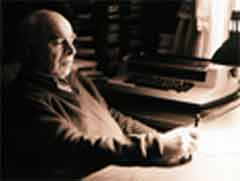

Mark Popovsky
Russians in America: The Third Wave

Mark Popovskij/Popovsky/ Поповский М.
1922-2004
Popovsky's book На другой сторне планеты: Рассказы о русской эмиграции (Philadelphia: 1994), was financed by his friends and colleagues. It consists mostly of articles published in Новое Русское Слово. It is a seriously researched, well documented and upbeat positive story of successes of the Third Wave in America. Popovsky himself had emigrated in 1977. On the basis of over 1000 questionnaires, Popovsky concluded that the overwhelming majortiy were happy with their decision. The demographics of a group that was largely middle-aged when it arrived, seeking not so much material improvement, but because of their rejection of the Soviet system. He focues on those who themselves made immigration work, the key to success being the efforts one expended, not just being in America. (Жизнь в Америке интересно, но не легко." (I. 153). Popovsky's happiest are those who get beyond their Soviet mentality "главние это СТАТЬ АМЕРИКАНЦЕМ. " (188).
The book also explains the set of questionnaries, some 130 sent to writers (287 ff.). These will become part of his archival papers at Columbia. He notes that between Jerusalem and Los Angeles as many as 200-300 books a year in Russian were published in the 1980s. The problem was not the lack of writing or writers or even publication-but the LACK OF READERS.
In Volume II, Popovsky notes that after 10-15 years most had lost interest in Russian emigre life. And his commentary on the relationship of the Third Wave to earlier Russian emigrtations is a simple "Мы игнорируем их -- они на. А Жаль!" (II, 169).
Ultimately Popovsky concludes that it is Russians who use the word emigration. It is opposed to the American ideal, that looks forward and not backward. While there is a lot of material out there is anyone listening or reading?
Who, What, Where and When?
Internet Links
Другие Ссылки